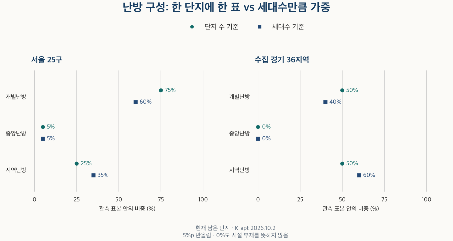
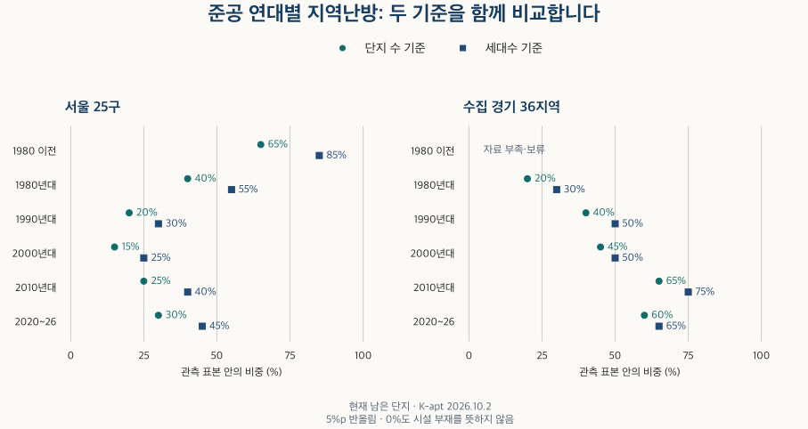

아파트의 진화 · 난방 방식
지역난방·개별난방·중앙난방 차이: 준공 연대와 지역으로 보면
개별·중앙·지역난방의 차이와 서울·수집 경기의 준공 연대별 구성을 비교합니다. 단지 수와 세대수 가중, 신도시와의 관계, 중앙난방 단지의 연식·규모와 정보 누락의 한계를 확인합니다.
분석 기간 · 현재 난방 기록 · 서울 25구·수집 경기 36개 지역 | 자료 기준일 · 2026-10-02
매물 설명의 ‘지역난방’과 ‘개별난방’은 무엇이 다를까요? 열을 만드는 위치부터 다릅니다. 현재 서울·수집 경기의 단지 정보를 비교하면, 단지마다 한 표를 줄 때보다 세대수만큼 가중할 때 지역난방 비중이 커집니다. 준공 연대와 지역의 구성도 다르지만, 현재 난방 기록만으로 처음 설치한 방식이나 난방비의 우열까지 알 수는 없습니다.
개별·중앙·지역난방은 무엇이 다른가요?
집에서 쓰는 열을 어디에서 만들어 공급하는지로 구분하면 이해하기 쉽습니다. 아래는 K-apt 단지 기본정보의 난방방식 도움말을 정리한 내용입니다.
| 방식 | 열을 만드는 위치 | 단지 안내에서 확인할 것 |
|---|---|---|
| 개별난방 | 세대별 소형 보일러 | 후보 주택의 보일러와 현재 사용 방식 |
| 중앙난방 | 단지 내 대형 보일러 | 단지에서 공급하는 난방의 운영 안내 |
| 지역난방 | 단지 밖의 지역 열공급 시설 | 공급기관과 단지의 현재 열 공급 안내 |
이 구분만으로 요금·온도 조절·유지관리의 우열을 정할 수는 없습니다. 실제 비교에는 주택의 단열 상태, 이용량과 운영 조건 등이 더 필요합니다. 이번 글은 비용 비교 대신, 현재 기록에서 세 방식이 어떤 준공 연대와 지역에 나타나는지 살펴봅니다.
원본에는 ‘개별난방+기타’나 ‘기타’도 있습니다. 이를 개별난방에 합치지 않았고, 빈칸도 어느 방식으로 추정해 넣지 않았습니다. 범위는 서울 25구와 수집 경기 36개 지역입니다. 경기 전체나 인천을 포함하지 않습니다. 기본정보 기준일은 2026년 10월 2일입니다.
단지 수 기준과 세대수 기준은 왜 다른가요?
작은 단지와 큰 단지에 같은 한 표를 줄지, 그 안의 주택 수만큼 비중을 줄지의 차이입니다. 가상 예시로 개별난방 100세대 단지와 지역난방 900세대 단지가 하나씩 있다면, 지역난방은 단지 기준 50%지만 세대수 기준 90%입니다. 난방 방식이 바뀌지 않아도 분모에 따라 비중이 달라집니다.

| 지역·방식 | 단지 수 기준 | 세대수 기준 |
|---|---|---|
| 서울 · 개별난방 | 75% | 60% |
| 서울 · 중앙난방 | 5% | 5% |
| 서울 · 지역난방 | 25% | 35% |
| 수집 경기 · 개별난방 | 50% | 40% |
| 수집 경기 · 중앙난방 | 0% | 0% |
| 수집 경기 · 지역난방 | 50% | 60% |
이 표본에서는 서울·수집 경기 모두 세대수 기준의 지역난방 비중이 더 큽니다. 지역난방 단지가 전체 관측 단지의 평균보다 큰 쪽에 놓이는 효과입니다. 다만 지역난방이 단지 규모를 키웠다는 인과관계를 뜻하지는 않습니다.
난방이 확인된 단지 중 세대수까지 확인되는 단지만 남기면 표본도 달라질 수 있습니다. 이번 자료에서는 두 표본이 같았습니다. 아래 연대 표의 ‘단지 수 기준’과 ‘세대수 확인 단지만: 단지 기준’이 같은 이유입니다. 따라서 이번 두 비중의 차이는 공통 표본 안의 가중치 차이로 읽을 수 있습니다. 계산 원리는 세대수·면적 가중치 강의에서 더 자세히 볼 수 있습니다.
최근 준공 단지일수록 지역난방이 많나요?
수집 경기에서는 1990년대 준공 집합의 지역난방 비중이 단지 기준 약 40%, 2010년대는 약 65%입니다. 하지만 서울은 1980년 이전 집합이 약 65%, 2000년대는 약 15%입니다. 새로 지어진 연대일수록 언제나 더 많다는 한 방향의 규칙은 성립하지 않습니다. 현재 남은 단지와 관측 범위를 함께 읽어야 합니다.

| 지역·준공 연대 | 단지 수 기준 | 세대수 기준 |
|---|---|---|
| 서울 · 전체 준공 연대 | 25% | 35% |
| 서울 · 1980년 이전 | 65% | 85% |
| 서울 · 1980년대 | 40% | 55% |
| 서울 · 1990년대 | 20% | 30% |
| 서울 · 2000년대 | 15% | 25% |
| 서울 · 2010년대 | 25% | 40% |
| 서울 · 2020~2026년 | 30% | 45% |
| 서울 · 준공연도 미상 | 보류 | 보류 |
| 수집 경기 · 전체 준공 연대 | 50% | 60% |
| 수집 경기 · 1980년 이전 | 보류 | 보류 |
| 수집 경기 · 1980년대 | 20% | 30% |
| 수집 경기 · 1990년대 | 40% | 50% |
| 수집 경기 · 2000년대 | 45% | 50% |
| 수집 경기 · 2010년대 | 65% | 75% |
| 수집 경기 · 2020~2026년 | 60% | 65% |
| 수집 경기 · 준공연도 미상 | 보류 | 보류 |
이 결과로 ‘1980년 이전부터 해당 단지가 지역난방이었다’고 말할 수는 없습니다. 지금의 기본정보만 확인했고 난방 전환 이력은 없기 때문입니다. 철거된 단지의 당시 방식도 이 비교에 들어 있지 않습니다.
준공 연대별 개별·중앙·지역난방 세 방식 모두 보기
| 지역·준공 연대 | 단지 수 기준 | 세대수 확인 단지만: 단지 기준 | 세대수 기준 |
|---|---|---|---|
| 서울 · 전체 준공 연대 | 개별 75% 중앙 5% 지역 25% | 개별 75% 중앙 5% 지역 25% | 개별 60% 중앙 5% 지역 35% |
| 서울 · 1980년 이전 | 보류 | 보류 | 보류 |
| 서울 · 1980년대 | 개별 45% 중앙 15% 지역 40% | 개별 45% 중앙 15% 지역 40% | 개별 30% 중앙 20% 지역 55% |
| 서울 · 1990년대 | 개별 75% 중앙 5% 지역 20% | 개별 75% 중앙 5% 지역 20% | 개별 60% 중앙 10% 지역 30% |
| 서울 · 2000년대 | 개별 85% 중앙 0% 지역 15% | 개별 85% 중앙 0% 지역 15% | 개별 70% 중앙 0% 지역 25% |
| 서울 · 2010년대 | 보류 | 보류 | 보류 |
| 서울 · 2020~2026년 | 보류 | 보류 | 보류 |
| 서울 · 준공연도 미상 | 보류 | 보류 | 보류 |
| 수집 경기 · 전체 준공 연대 | 개별 50% 중앙 0% 지역 50% | 개별 50% 중앙 0% 지역 50% | 개별 40% 중앙 0% 지역 60% |
| 수집 경기 · 1980년 이전 | 보류 | 보류 | 보류 |
| 수집 경기 · 1980년대 | 보류 | 보류 | 보류 |
| 수집 경기 · 1990년대 | 개별 60% 중앙 0% 지역 40% | 개별 60% 중앙 0% 지역 40% | 개별 45% 중앙 5% 지역 50% |
| 수집 경기 · 2000년대 | 보류 | 보류 | 보류 |
| 수집 경기 · 2010년대 | 개별 35% 중앙 0% 지역 65% | 개별 35% 중앙 0% 지역 65% | 개별 25% 중앙 0% 지역 75% |
| 수집 경기 · 2020~2026년 | 보류 | 보류 | 보류 |
| 수집 경기 · 준공연도 미상 | 보류 | 보류 | 보류 |
각 표의 값은 개별·중앙·지역 순서입니다. 작은 범주가 있으면 나머지 둘로 거꾸로 계산되지 않도록 세 방식 전체를 함께 보류했습니다. 지역난방과 나머지를 합친 비교는 별도로 계산할 수 있어, 위 표에 값이 있어도 이 표는 보류될 수 있습니다.
표시된 0%는 난방 방식이 없다는 뜻이 아닙니다. 예를 들어 수집 경기 전체의 중앙난방 비중은 반올림하면 0%지만, 현재 중앙난방으로 기록된 단지가 있으며 아래에서 연식과 규모를 따로 확인합니다. 반올림한 구성비는 작은 차이를 정밀하게 비교하는 데 적합하지 않습니다.
지역난방 비중이 큰 곳은 신도시인가요?
신도시 개발과 지역난방의 확대에는 공식 자료로 확인되는 관계가 있습니다. 한국에너지공단의 집단에너지사업 설명은 수도권 신도시 개발을 사업 확대의 배경으로 소개합니다. 한국지역난방공사의 2025년 사업보고서에도 분당, 일산·화정·행신, 판교, 동탄 2신도시, 교하·운정 등이 공급지역으로 나옵니다.
이번 관측 표본에서 성남시 분당구의 지역난방 비중은 두 기준 모두 반올림 약 100%, 고양시 일산서구는 단지 기준 약 80%·세대수 기준 약 85%입니다. 안양시 동안구와 군포시는 각각 단지 기준 약 70%·세대수 기준 약 85%입니다. 신도시가 있는 지역에서 높은 비중이 나타나는 사례입니다.
그러나 행정구역 전체의 비중을 신도시 안의 비중으로 바꿔 읽으면 안 됩니다. LH의 1기 신도시 안내는 분당·일산·평촌·산본·중동을 성남·고양·안양·군포·부천과 연결합니다. 이 글의 시·구 경계는 그 신도시 경계와 같지 않습니다. 분당구에는 판교도 있고, 고양의 공급지역에도 일산 이외 지역이 있습니다.
공급기관의 사업보고서는 특정 기관의 공급 현황입니다. 모든 공급자를 합친 2026년 전수 명단도 아닙니다. 상암·여의도·반포 같은 공급지역도 있어 지역난방을 신도시에만 있는 시설로 설명할 수도 없습니다. 개발·공급의 맥락과 현재 지역 분포가 함께 관측된다는 정도로 해석합니다.
아래 표에서 지역난방 비중 옆의 가용률도 확인하세요. 예를 들어 분당구의 단지 정보 가용률은 60~70% 구간입니다. 관측 표본의 반올림 100%가 그 구의 모든 단지에 지역난방이 있다는 뜻은 아닙니다. 시·구는 정해진 지역 순서로 제시하며 비중 순위나 거주지 추천으로 사용하지 않습니다.
전체 준공 연대 · 서울·수집 경기 61개 지역
| 지역 | 지역난방: 단지 기준 | 지역난방: 세대수 기준 | 단지 가용률 | 알려진 세대수 가용률 | 세대수 미상 단지 |
|---|---|---|---|---|---|
| 서울 종로구 | 0% | 0% | 10–20% | 70–80% | 10–20% |
| 서울 중구 | 0% | 0% | 20–30% | 40–50% | 10–20% |
| 서울 용산구 | 25% | 40% | 20–30% | 70–80% | 0–10% |
| 서울 성동구 | 보류 | 보류 | 50–60% | 60–70% | 0–10% |
| 서울 광진구 | 0% | 0% | 20–30% | 70–80% | 0–10% |
| 서울 동대문구 | 0% | 0% | 20–30% | 70–80% | 0–10% |
| 서울 중랑구 | 10% | 25% | 30–40% | 70–80% | 0–10% |
| 서울 성북구 | 보류 | 보류 | 50–60% | 80–90% | 0–10% |
| 서울 강북구 | 0% | 0% | 20–30% | 70–80% | 0–10% |
| 서울 도봉구 | 보류 | 보류 | 40–50% | 80–90% | 0–10% |
| 서울 노원구 | 30% | 50% | 50–60% | 80–90% | 10–20% |
| 서울 은평구 | 30% | 30% | 20–30% | 70–80% | 0–10% |
| 서울 서대문구 | 보류 | 보류 | 20–30% | 70–80% | 0–10% |
| 서울 마포구 | 20% | 30% | 30–40% | 70–80% | 0–10% |
| 서울 양천구 | 60% | 80% | 20–30% | 70–80% | 0–10% |
| 서울 강서구 | 35% | 60% | 20–30% | 80–90% | 0–10% |
| 서울 구로구 | 10% | 10% | 20–30% | 80–90% | 0–10% |
| 서울 금천구 | 보류 | 보류 | 20–30% | 70–80% | 0–10% |
| 서울 영등포구 | 15% | 15% | 60–70% | 80–90% | 0–10% |
| 서울 동작구 | 보류 | 보류 | 40–50% | 80–90% | 0–10% |
| 서울 관악구 | 0% | 0% | 20–30% | 70–80% | 0–10% |
| 서울 서초구 | 45% | 60% | 10–20% | 70–80% | 0–10% |
| 서울 강남구 | 65% | 80% | 20–30% | 70–80% | 10–20% |
| 서울 송파구 | 45% | 75% | 20–30% | 80–90% | 0–10% |
| 서울 강동구 | 25% | 55% | 20–30% | 80–90% | 0–10% |
| 경기 수원시 장안구 | 50% | 65% | 40–50% | 80–90% | 0–10% |
| 경기 수원시 권선구 | 50% | 65% | 50–60% | 90–100% | 0–10% |
| 경기 수원시 팔달구 | 30% | 65% | 40–50% | 80–90% | 10–20% |
| 경기 수원시 영통구 | 80% | 90% | 70–80% | 90–100% | 10–20% |
| 경기 성남시 수정구 | 50% | 75% | 30–40% | 80–90% | 0–10% |
| 경기 성남시 중원구 | 35% | 40% | 30–40% | 90–100% | 0–10% |
| 경기 성남시 분당구 | 100% | 100% | 60–70% | 90–100% | 20–30% |
| 경기 의정부시 | 10% | 20% | 60–70% | 90–100% | 0–10% |
| 경기 안양시 만안구 | 보류 | 보류 | 20–30% | 80–90% | 10–20% |
| 경기 안양시 동안구 | 70% | 85% | 30–40% | 80–90% | 20–30% |
| 경기 부천시 원미구 | 65% | 85% | 20–30% | 70–80% | 10–20% |
| 경기 부천시 소사구 | 15% | 30% | 20–30% | 70–80% | 10–20% |
| 경기 부천시 오정구 | 보류 | 보류 | 10–20% | 40–50% | 0–10% |
| 경기 광명시 | 20% | 20% | 50–60% | 90–100% | 10–20% |
| 경기 평택시 | 25% | 35% | 60–70% | 90–100% | 0–10% |
| 경기 안산시 상록구 | 55% | 65% | 50–60% | 90–100% | 0–10% |
| 경기 안산시 단원구 | 65% | 70% | 60–70% | 90–100% | 20–30% |
| 경기 고양시 덕양구 | 75% | 85% | 50–60% | 80–90% | 10–20% |
| 경기 고양시 일산동구 | 보류 | 보류 | 50–60% | 90–100% | 30–40% |
| 경기 고양시 일산서구 | 80% | 85% | 60–70% | 90–100% | 20–30% |
| 경기 과천시 | 보류 | 보류 | 50–60% | 70–80% | 30–40% |
| 경기 구리시 | 보류 | 보류 | 30–40% | 80–90% | 10–20% |
| 경기 남양주시 | 15% | 25% | 60–70% | 90–100% | 0–10% |
| 경기 군포시 | 70% | 85% | 30–40% | 70–80% | 0–10% |
| 경기 의왕시 | 40% | 50% | 60–70% | 90–100% | 10–20% |
| 경기 하남시 | 60% | 70% | 80–90% | 90–100% | 0–10% |
| 경기 용인시 처인구 | 0% | 0% | 30–40% | 90–100% | 0–10% |
| 경기 용인시 기흥구 | 65% | 75% | 70–80% | 90–100% | 0–10% |
| 경기 용인시 수지구 | 95% | 95% | 60–70% | 90–100% | 0–10% |
| 경기 파주시 | 40% | 50% | 70–80% | 90–100% | 0–10% |
| 경기 김포시 | 45% | 50% | 70–80% | 90–100% | 10–20% |
| 경기 화성시 만세구 | 60% | 65% | 60–70% | 90–100% | 0–10% |
| 경기 화성시 효행구 | 25% | 35% | 70–80% | 90–100% | 0–10% |
| 경기 화성시 병점구 | 65% | 75% | 80–90% | 90–100% | 0–10% |
| 경기 화성시 동탄구 | 보류 | 보류 | 80–90% | 90–100% | 0–10% |
| 경기 광주시 | 0% | 0% | 80–90% | 80–90% | 0–10% |
1980년 이전 · 서울·수집 경기 61개 지역
| 지역 | 지역난방: 단지 기준 | 지역난방: 세대수 기준 | 단지 가용률 | 알려진 세대수 가용률 | 세대수 미상 단지 |
|---|---|---|---|---|---|
| 서울 종로구 | 보류 | 보류 | 자료 부족 | 자료 부족 | 자료 부족 |
| 서울 중구 | 보류 | 보류 | 자료 부족 | 자료 부족 | 자료 부족 |
| 서울 용산구 | 보류 | 보류 | 자료 부족 | 자료 부족 | 자료 부족 |
| 서울 성동구 | 보류 | 보류 | 자료 부족 | 자료 부족 | 자료 부족 |
| 서울 광진구 | 보류 | 보류 | 자료 부족 | 자료 부족 | 자료 부족 |
| 서울 동대문구 | 보류 | 보류 | 자료 부족 | 자료 부족 | 자료 부족 |
| 서울 중랑구 | 보류 | 보류 | 자료 부족 | 자료 부족 | 자료 부족 |
| 서울 성북구 | 보류 | 보류 | 자료 부족 | 자료 부족 | 자료 부족 |
| 서울 강북구 | 보류 | 보류 | 자료 부족 | 자료 부족 | 자료 부족 |
| 서울 도봉구 | 보류 | 보류 | 자료 부족 | 자료 부족 | 자료 부족 |
| 서울 노원구 | 보류 | 보류 | 자료 부족 | 자료 부족 | 자료 부족 |
| 서울 은평구 | 보류 | 보류 | 자료 부족 | 자료 부족 | 자료 부족 |
| 서울 서대문구 | 보류 | 보류 | 자료 부족 | 자료 부족 | 자료 부족 |
| 서울 마포구 | 보류 | 보류 | 자료 부족 | 자료 부족 | 자료 부족 |
| 서울 양천구 | 보류 | 보류 | 자료 부족 | 자료 부족 | 자료 부족 |
| 서울 강서구 | 보류 | 보류 | 자료 부족 | 자료 부족 | 자료 부족 |
| 서울 구로구 | 보류 | 보류 | 자료 부족 | 자료 부족 | 자료 부족 |
| 서울 금천구 | 보류 | 보류 | 자료 부족 | 자료 부족 | 자료 부족 |
| 서울 영등포구 | 보류 | 보류 | 70–80% | 90–100% | 0–10% |
| 서울 동작구 | 보류 | 보류 | 자료 부족 | 자료 부족 | 자료 부족 |
| 서울 관악구 | 보류 | 보류 | 자료 부족 | 자료 부족 | 자료 부족 |
| 서울 서초구 | 보류 | 보류 | 자료 부족 | 자료 부족 | 자료 부족 |
| 서울 강남구 | 보류 | 보류 | 자료 부족 | 자료 부족 | 자료 부족 |
| 서울 송파구 | 보류 | 보류 | 자료 부족 | 자료 부족 | 자료 부족 |
| 서울 강동구 | 보류 | 보류 | 자료 부족 | 자료 부족 | 자료 부족 |
| 경기 수원시 장안구 | 보류 | 보류 | 자료 부족 | 자료 부족 | 자료 부족 |
| 경기 수원시 권선구 | 보류 | 보류 | 자료 부족 | 자료 부족 | 자료 부족 |
| 경기 수원시 팔달구 | 보류 | 보류 | 자료 부족 | 자료 부족 | 자료 부족 |
| 경기 수원시 영통구 | 보류 | 보류 | 자료 부족 | 자료 부족 | 자료 부족 |
| 경기 성남시 수정구 | 보류 | 보류 | 자료 부족 | 자료 부족 | 자료 부족 |
| 경기 성남시 중원구 | 보류 | 보류 | 자료 부족 | 자료 부족 | 자료 부족 |
| 경기 성남시 분당구 | 보류 | 보류 | 자료 부족 | 자료 부족 | 자료 부족 |
| 경기 의정부시 | 보류 | 보류 | 자료 부족 | 자료 부족 | 자료 부족 |
| 경기 안양시 만안구 | 보류 | 보류 | 자료 부족 | 자료 부족 | 자료 부족 |
| 경기 안양시 동안구 | 보류 | 보류 | 자료 부족 | 자료 부족 | 자료 부족 |
| 경기 부천시 원미구 | 보류 | 보류 | 자료 부족 | 자료 부족 | 자료 부족 |
| 경기 부천시 소사구 | 보류 | 보류 | 자료 부족 | 자료 부족 | 자료 부족 |
| 경기 부천시 오정구 | 보류 | 보류 | 자료 부족 | 자료 부족 | 자료 부족 |
| 경기 광명시 | 보류 | 보류 | 자료 부족 | 자료 부족 | 자료 부족 |
| 경기 평택시 | 보류 | 보류 | 자료 부족 | 자료 부족 | 자료 부족 |
| 경기 안산시 상록구 | 보류 | 보류 | 자료 부족 | 자료 부족 | 자료 부족 |
| 경기 안산시 단원구 | 보류 | 보류 | 자료 부족 | 자료 부족 | 자료 부족 |
| 경기 고양시 덕양구 | 보류 | 보류 | 자료 부족 | 자료 부족 | 자료 부족 |
| 경기 고양시 일산동구 | 보류 | 보류 | 자료 부족 | 자료 부족 | 자료 부족 |
| 경기 고양시 일산서구 | 보류 | 보류 | 자료 부족 | 자료 부족 | 자료 부족 |
| 경기 과천시 | 보류 | 보류 | 자료 부족 | 자료 부족 | 자료 부족 |
| 경기 구리시 | 보류 | 보류 | 자료 부족 | 자료 부족 | 자료 부족 |
| 경기 남양주시 | 보류 | 보류 | 자료 부족 | 자료 부족 | 자료 부족 |
| 경기 군포시 | 보류 | 보류 | 자료 부족 | 자료 부족 | 자료 부족 |
| 경기 의왕시 | 보류 | 보류 | 자료 부족 | 자료 부족 | 자료 부족 |
| 경기 하남시 | 보류 | 보류 | 자료 부족 | 자료 부족 | 자료 부족 |
| 경기 용인시 처인구 | 보류 | 보류 | 자료 부족 | 자료 부족 | 자료 부족 |
| 경기 용인시 기흥구 | 보류 | 보류 | 자료 부족 | 자료 부족 | 자료 부족 |
| 경기 용인시 수지구 | 보류 | 보류 | 자료 부족 | 자료 부족 | 자료 부족 |
| 경기 파주시 | 보류 | 보류 | 자료 부족 | 자료 부족 | 자료 부족 |
| 경기 김포시 | 보류 | 보류 | 자료 부족 | 자료 부족 | 자료 부족 |
| 경기 화성시 만세구 | 보류 | 보류 | 자료 부족 | 자료 부족 | 자료 부족 |
| 경기 화성시 효행구 | 보류 | 보류 | 자료 부족 | 자료 부족 | 자료 부족 |
| 경기 화성시 병점구 | 보류 | 보류 | 자료 부족 | 자료 부족 | 자료 부족 |
| 경기 화성시 동탄구 | 보류 | 보류 | 자료 부족 | 자료 부족 | 자료 부족 |
| 경기 광주시 | 보류 | 보류 | 자료 부족 | 자료 부족 | 자료 부족 |
1980년대 · 서울·수집 경기 61개 지역
| 지역 | 지역난방: 단지 기준 | 지역난방: 세대수 기준 | 단지 가용률 | 알려진 세대수 가용률 | 세대수 미상 단지 |
|---|---|---|---|---|---|
| 서울 종로구 | 보류 | 보류 | 자료 부족 | 자료 부족 | 자료 부족 |
| 서울 중구 | 보류 | 보류 | 자료 부족 | 자료 부족 | 자료 부족 |
| 서울 용산구 | 보류 | 보류 | 자료 부족 | 자료 부족 | 자료 부족 |
| 서울 성동구 | 보류 | 보류 | 자료 부족 | 자료 부족 | 자료 부족 |
| 서울 광진구 | 보류 | 보류 | 자료 부족 | 자료 부족 | 자료 부족 |
| 서울 동대문구 | 보류 | 보류 | 자료 부족 | 자료 부족 | 자료 부족 |
| 서울 중랑구 | 보류 | 보류 | 자료 부족 | 자료 부족 | 자료 부족 |
| 서울 성북구 | 보류 | 보류 | 자료 부족 | 자료 부족 | 자료 부족 |
| 서울 강북구 | 보류 | 보류 | 자료 부족 | 자료 부족 | 자료 부족 |
| 서울 도봉구 | 보류 | 보류 | 70–80% | 90–100% | 10–20% |
| 서울 노원구 | 60% | 70% | 40–50% | 80–90% | 50–60% |
| 서울 은평구 | 보류 | 보류 | 자료 부족 | 자료 부족 | 자료 부족 |
| 서울 서대문구 | 보류 | 보류 | 자료 부족 | 자료 부족 | 자료 부족 |
| 서울 마포구 | 보류 | 보류 | 자료 부족 | 자료 부족 | 자료 부족 |
| 서울 양천구 | 보류 | 보류 | 80–90% | 90–100% | 0–10% |
| 서울 강서구 | 보류 | 보류 | 자료 부족 | 자료 부족 | 자료 부족 |
| 서울 구로구 | 0% | 0% | 30–40% | 80–90% | 0–10% |
| 서울 금천구 | 보류 | 보류 | 자료 부족 | 자료 부족 | 자료 부족 |
| 서울 영등포구 | 0% | 0% | 70–80% | 90–100% | 10–20% |
| 서울 동작구 | 보류 | 보류 | 자료 부족 | 자료 부족 | 자료 부족 |
| 서울 관악구 | 보류 | 보류 | 자료 부족 | 자료 부족 | 자료 부족 |
| 서울 서초구 | 보류 | 보류 | 30–40% | 80–90% | 50–60% |
| 서울 강남구 | 보류 | 보류 | 30–40% | 60–70% | 30–40% |
| 서울 송파구 | 보류 | 보류 | 60–70% | 90–100% | 20–30% |
| 서울 강동구 | 0% | 0% | 40–50% | 90–100% | 40–50% |
| 경기 수원시 장안구 | 보류 | 보류 | 자료 부족 | 자료 부족 | 자료 부족 |
| 경기 수원시 권선구 | 보류 | 보류 | 자료 부족 | 자료 부족 | 자료 부족 |
| 경기 수원시 팔달구 | 보류 | 보류 | 자료 부족 | 자료 부족 | 자료 부족 |
| 경기 수원시 영통구 | 보류 | 보류 | 자료 부족 | 자료 부족 | 자료 부족 |
| 경기 성남시 수정구 | 보류 | 보류 | 자료 부족 | 자료 부족 | 자료 부족 |
| 경기 성남시 중원구 | 보류 | 보류 | 자료 부족 | 자료 부족 | 자료 부족 |
| 경기 성남시 분당구 | 보류 | 보류 | 자료 부족 | 자료 부족 | 자료 부족 |
| 경기 의정부시 | 보류 | 보류 | 자료 부족 | 자료 부족 | 자료 부족 |
| 경기 안양시 만안구 | 보류 | 보류 | 자료 부족 | 자료 부족 | 자료 부족 |
| 경기 안양시 동안구 | 보류 | 보류 | 자료 부족 | 자료 부족 | 자료 부족 |
| 경기 부천시 원미구 | 보류 | 보류 | 자료 부족 | 자료 부족 | 자료 부족 |
| 경기 부천시 소사구 | 0% | 0% | 10–20% | 60–70% | 20–30% |
| 경기 부천시 오정구 | 보류 | 보류 | 자료 부족 | 자료 부족 | 자료 부족 |
| 경기 광명시 | 보류 | 보류 | 자료 부족 | 자료 부족 | 자료 부족 |
| 경기 평택시 | 보류 | 보류 | 자료 부족 | 자료 부족 | 자료 부족 |
| 경기 안산시 상록구 | 보류 | 보류 | 자료 부족 | 자료 부족 | 자료 부족 |
| 경기 안산시 단원구 | 보류 | 보류 | 자료 부족 | 자료 부족 | 자료 부족 |
| 경기 고양시 덕양구 | 보류 | 보류 | 자료 부족 | 자료 부족 | 자료 부족 |
| 경기 고양시 일산동구 | 보류 | 보류 | 자료 부족 | 자료 부족 | 자료 부족 |
| 경기 고양시 일산서구 | 보류 | 보류 | 자료 부족 | 자료 부족 | 자료 부족 |
| 경기 과천시 | 보류 | 보류 | 자료 부족 | 자료 부족 | 자료 부족 |
| 경기 구리시 | 보류 | 보류 | 자료 부족 | 자료 부족 | 자료 부족 |
| 경기 남양주시 | 보류 | 보류 | 자료 부족 | 자료 부족 | 자료 부족 |
| 경기 군포시 | 보류 | 보류 | 자료 부족 | 자료 부족 | 자료 부족 |
| 경기 의왕시 | 보류 | 보류 | 자료 부족 | 자료 부족 | 자료 부족 |
| 경기 하남시 | 보류 | 보류 | 자료 부족 | 자료 부족 | 자료 부족 |
| 경기 용인시 처인구 | 보류 | 보류 | 자료 부족 | 자료 부족 | 자료 부족 |
| 경기 용인시 기흥구 | 보류 | 보류 | 자료 부족 | 자료 부족 | 자료 부족 |
| 경기 용인시 수지구 | 보류 | 보류 | 자료 부족 | 자료 부족 | 자료 부족 |
| 경기 파주시 | 보류 | 보류 | 자료 부족 | 자료 부족 | 자료 부족 |
| 경기 김포시 | 보류 | 보류 | 자료 부족 | 자료 부족 | 자료 부족 |
| 경기 화성시 만세구 | 보류 | 보류 | 자료 부족 | 자료 부족 | 자료 부족 |
| 경기 화성시 효행구 | 보류 | 보류 | 자료 부족 | 자료 부족 | 자료 부족 |
| 경기 화성시 병점구 | 보류 | 보류 | 자료 부족 | 자료 부족 | 자료 부족 |
| 경기 화성시 동탄구 | 보류 | 보류 | 자료 부족 | 자료 부족 | 자료 부족 |
| 경기 광주시 | 보류 | 보류 | 자료 부족 | 자료 부족 | 자료 부족 |
1990년대 · 서울·수집 경기 61개 지역
| 지역 | 지역난방: 단지 기준 | 지역난방: 세대수 기준 | 단지 가용률 | 알려진 세대수 가용률 | 세대수 미상 단지 |
|---|---|---|---|---|---|
| 서울 종로구 | 보류 | 보류 | 자료 부족 | 자료 부족 | 자료 부족 |
| 서울 중구 | 보류 | 보류 | 자료 부족 | 자료 부족 | 자료 부족 |
| 서울 용산구 | 보류 | 보류 | 자료 부족 | 자료 부족 | 자료 부족 |
| 서울 성동구 | 0% | 0% | 60–70% | 70–80% | 0–10% |
| 서울 광진구 | 0% | 0% | 50–60% | 90–100% | 0–10% |
| 서울 동대문구 | 0% | 0% | 50–60% | 80–90% | 10–20% |
| 서울 중랑구 | 보류 | 보류 | 50–60% | 80–90% | 0–10% |
| 서울 성북구 | 보류 | 보류 | 60–70% | 80–90% | 0–10% |
| 서울 강북구 | 0% | 0% | 40–50% | 60–70% | 0–10% |
| 서울 도봉구 | 보류 | 보류 | 70–80% | 90–100% | 0–10% |
| 서울 노원구 | 35% | 55% | 80–90% | 90–100% | 0–10% |
| 서울 은평구 | 0% | 0% | 40–50% | 80–90% | 0–10% |
| 서울 서대문구 | 보류 | 보류 | 60–70% | 80–90% | 0–10% |
| 서울 마포구 | 보류 | 보류 | 40–50% | 50–60% | 0–10% |
| 서울 양천구 | 보류 | 보류 | 20–30% | 70–80% | 0–10% |
| 서울 강서구 | 40% | 65% | 60–70% | 80–90% | 0–10% |
| 서울 구로구 | 보류 | 보류 | 10–20% | 70–80% | 0–10% |
| 서울 금천구 | 보류 | 보류 | 40–50% | 80–90% | 0–10% |
| 서울 영등포구 | 0% | 0% | 90–100% | 90–100% | 0–10% |
| 서울 동작구 | 보류 | 보류 | 40–50% | 60–70% | 10–20% |
| 서울 관악구 | 0% | 0% | 50–60% | 80–90% | 0–10% |
| 서울 서초구 | 35% | 40% | 20–30% | 70–80% | 0–10% |
| 서울 강남구 | 50% | 75% | 30–40% | 70–80% | 10–20% |
| 서울 송파구 | 35% | 45% | 30–40% | 80–90% | 0–10% |
| 서울 강동구 | 0% | 0% | 30–40% | 70–80% | 0–10% |
| 경기 수원시 장안구 | 40% | 60% | 50–60% | 90–100% | 0–10% |
| 경기 수원시 권선구 | 25% | 35% | 80–90% | 90–100% | 0–10% |
| 경기 수원시 팔달구 | 보류 | 보류 | 40–50% | 80–90% | 10–20% |
| 경기 수원시 영통구 | 보류 | 보류 | 40–50% | 90–100% | 40–50% |
| 경기 성남시 수정구 | 보류 | 보류 | 자료 부족 | 자료 부족 | 자료 부족 |
| 경기 성남시 중원구 | 보류 | 보류 | 70–80% | 90–100% | 0–10% |
| 경기 성남시 분당구 | 100% | 100% | 50–60% | 90–100% | 30–40% |
| 경기 의정부시 | 보류 | 보류 | 70–80% | 90–100% | 10–20% |
| 경기 안양시 만안구 | 0% | 0% | 70–80% | 90–100% | 0–10% |
| 경기 안양시 동안구 | 85% | 95% | 60–70% | 80–90% | 10–20% |
| 경기 부천시 원미구 | 보류 | 보류 | 40–50% | 80–90% | 40–50% |
| 경기 부천시 소사구 | 보류 | 보류 | 60–70% | 90–100% | 10–20% |
| 경기 부천시 오정구 | 보류 | 보류 | 자료 부족 | 자료 부족 | 자료 부족 |
| 경기 광명시 | 0% | 0% | 70–80% | 90–100% | 0–10% |
| 경기 평택시 | 0% | 0% | 70–80% | 90–100% | 0–10% |
| 경기 안산시 상록구 | 40% | 55% | 80–90% | 90–100% | 10–20% |
| 경기 안산시 단원구 | 보류 | 보류 | 자료 부족 | 자료 부족 | 자료 부족 |
| 경기 고양시 덕양구 | 80% | 90% | 50–60% | 80–90% | 20–30% |
| 경기 고양시 일산동구 | 보류 | 보류 | 40–50% | 80–90% | 50–60% |
| 경기 고양시 일산서구 | 보류 | 보류 | 60–70% | 90–100% | 30–40% |
| 경기 과천시 | 보류 | 보류 | 자료 부족 | 자료 부족 | 자료 부족 |
| 경기 구리시 | 0% | 0% | 20–30% | 80–90% | 10–20% |
| 경기 남양주시 | 0% | 0% | 50–60% | 80–90% | 10–20% |
| 경기 군포시 | 보류 | 보류 | 70–80% | 70–80% | 10–20% |
| 경기 의왕시 | 보류 | 보류 | 60–70% | 80–90% | 10–20% |
| 경기 하남시 | 0% | 0% | 80–90% | 90–100% | 0–10% |
| 경기 용인시 처인구 | 0% | 0% | 10–20% | 70–80% | 0–10% |
| 경기 용인시 기흥구 | 보류 | 보류 | 50–60% | 80–90% | 0–10% |
| 경기 용인시 수지구 | 보류 | 보류 | 50–60% | 90–100% | 0–10% |
| 경기 파주시 | 0% | 0% | 50–60% | 80–90% | 10–20% |
| 경기 김포시 | 0% | 0% | 60–70% | 90–100% | 20–30% |
| 경기 화성시 만세구 | 보류 | 보류 | 자료 부족 | 자료 부족 | 자료 부족 |
| 경기 화성시 효행구 | 보류 | 보류 | 자료 부족 | 자료 부족 | 자료 부족 |
| 경기 화성시 병점구 | 보류 | 보류 | 자료 부족 | 자료 부족 | 자료 부족 |
| 경기 화성시 동탄구 | 보류 | 보류 | 자료 부족 | 자료 부족 | 자료 부족 |
| 경기 광주시 | 0% | 0% | 90–100% | 90–100% | 0–10% |
2000년대 · 서울·수집 경기 61개 지역
| 지역 | 지역난방: 단지 기준 | 지역난방: 세대수 기준 | 단지 가용률 | 알려진 세대수 가용률 | 세대수 미상 단지 |
|---|---|---|---|---|---|
| 서울 종로구 | 0% | 0% | 20–30% | 80–90% | 0–10% |
| 서울 중구 | 보류 | 보류 | 자료 부족 | 자료 부족 | 자료 부족 |
| 서울 용산구 | 보류 | 보류 | 20–30% | 70–80% | 0–10% |
| 서울 성동구 | 0% | 0% | 40–50% | 60–70% | 0–10% |
| 서울 광진구 | 0% | 0% | 10–20% | 60–70% | 0–10% |
| 서울 동대문구 | 0% | 0% | 20–30% | 70–80% | 0–10% |
| 서울 중랑구 | 0% | 0% | 20–30% | 60–70% | 0–10% |
| 서울 성북구 | 0% | 0% | 40–50% | 80–90% | 0–10% |
| 서울 강북구 | 0% | 0% | 20–30% | 80–90% | 0–10% |
| 서울 도봉구 | 0% | 0% | 30–40% | 80–90% | 0–10% |
| 서울 노원구 | 보류 | 보류 | 30–40% | 80–90% | 0–10% |
| 서울 은평구 | 35% | 45% | 10–20% | 70–80% | 0–10% |
| 서울 서대문구 | 보류 | 보류 | 10–20% | 70–80% | 0–10% |
| 서울 마포구 | 20% | 25% | 20–30% | 70–80% | 0–10% |
| 서울 양천구 | 45% | 60% | 10–20% | 60–70% | 0–10% |
| 서울 강서구 | 보류 | 보류 | 10–20% | 70–80% | 0–10% |
| 서울 구로구 | 보류 | 보류 | 20–30% | 80–90% | 0–10% |
| 서울 금천구 | 0% | 0% | 10–20% | 50–60% | 0–10% |
| 서울 영등포구 | 보류 | 보류 | 50–60% | 90–100% | 0–10% |
| 서울 동작구 | 0% | 0% | 30–40% | 80–90% | 0–10% |
| 서울 관악구 | 0% | 0% | 10–20% | 70–80% | 0–10% |
| 서울 서초구 | 30% | 55% | 10–20% | 60–70% | 0–10% |
| 서울 강남구 | 55% | 80% | 10–20% | 70–80% | 0–10% |
| 서울 송파구 | 25% | 75% | 10–20% | 80–90% | 0–10% |
| 서울 강동구 | 25% | 30% | 10–20% | 60–70% | 0–10% |
| 경기 수원시 장안구 | 65% | 70% | 50–60% | 90–100% | 0–10% |
| 경기 수원시 권선구 | 45% | 50% | 30–40% | 80–90% | 0–10% |
| 경기 수원시 팔달구 | 보류 | 보류 | 40–50% | 80–90% | 0–10% |
| 경기 수원시 영통구 | 보류 | 보류 | 80–90% | 90–100% | 0–10% |
| 경기 성남시 수정구 | 보류 | 보류 | 자료 부족 | 자료 부족 | 자료 부족 |
| 경기 성남시 중원구 | 보류 | 보류 | 10–20% | 70–80% | 0–10% |
| 경기 성남시 분당구 | 100% | 100% | 80–90% | 90–100% | 0–10% |
| 경기 의정부시 | 보류 | 보류 | 70–80% | 90–100% | 0–10% |
| 경기 안양시 만안구 | 보류 | 보류 | 40–50% | 90–100% | 0–10% |
| 경기 안양시 동안구 | 45% | 75% | 40–50% | 90–100% | 10–20% |
| 경기 부천시 원미구 | 70% | 85% | 30–40% | 80–90% | 0–10% |
| 경기 부천시 소사구 | 보류 | 보류 | 30–40% | 80–90% | 0–10% |
| 경기 부천시 오정구 | 보류 | 보류 | 자료 부족 | 자료 부족 | 자료 부족 |
| 경기 광명시 | 보류 | 보류 | 50–60% | 90–100% | 10–20% |
| 경기 평택시 | 0% | 0% | 70–80% | 90–100% | 0–10% |
| 경기 안산시 상록구 | 보류 | 보류 | 40–50% | 90–100% | 0–10% |
| 경기 안산시 단원구 | 보류 | 보류 | 80–90% | 90–100% | 0–10% |
| 경기 고양시 덕양구 | 35% | 40% | 40–50% | 80–90% | 0–10% |
| 경기 고양시 일산동구 | 보류 | 보류 | 90–100% | 90–100% | 0–10% |
| 경기 고양시 일산서구 | 65% | 70% | 80–90% | 90–100% | 0–10% |
| 경기 과천시 | 보류 | 보류 | 자료 부족 | 자료 부족 | 자료 부족 |
| 경기 구리시 | 0% | 0% | 30–40% | 90–100% | 0–10% |
| 경기 남양주시 | 0% | 0% | 70–80% | 90–100% | 0–10% |
| 경기 군포시 | 보류 | 보류 | 10–20% | 70–80% | 0–10% |
| 경기 의왕시 | 50% | 50% | 60–70% | 90–100% | 10–20% |
| 경기 하남시 | 0% | 0% | 70–80% | 90–100% | 0–10% |
| 경기 용인시 처인구 | 0% | 0% | 60–70% | 80–90% | 0–10% |
| 경기 용인시 기흥구 | 80% | 85% | 80–90% | 90–100% | 0–10% |
| 경기 용인시 수지구 | 보류 | 보류 | 70–80% | 90–100% | 0–10% |
| 경기 파주시 | 25% | 20% | 80–90% | 90–100% | 0–10% |
| 경기 김포시 | 보류 | 보류 | 80–90% | 90–100% | 0–10% |
| 경기 화성시 만세구 | 40% | 45% | 70–80% | 90–100% | 0–10% |
| 경기 화성시 효행구 | 0% | 0% | 70–80% | 90–100% | 0–10% |
| 경기 화성시 병점구 | 60% | 70% | 80–90% | 80–90% | 0–10% |
| 경기 화성시 동탄구 | 보류 | 보류 | 80–90% | 90–100% | 0–10% |
| 경기 광주시 | 0% | 0% | 80–90% | 90–100% | 0–10% |
2010년대 · 서울·수집 경기 61개 지역
| 지역 | 지역난방: 단지 기준 | 지역난방: 세대수 기준 | 단지 가용률 | 알려진 세대수 가용률 | 세대수 미상 단지 |
|---|---|---|---|---|---|
| 서울 종로구 | 보류 | 보류 | 자료 부족 | 자료 부족 | 자료 부족 |
| 서울 중구 | 0% | 0% | 40–50% | 90–100% | 20–30% |
| 서울 용산구 | 보류 | 보류 | 40–50% | 80–90% | 0–10% |
| 서울 성동구 | 보류 | 보류 | 50–60% | 60–70% | 0–10% |
| 서울 광진구 | 보류 | 보류 | 자료 부족 | 자료 부족 | 자료 부족 |
| 서울 동대문구 | 0% | 0% | 20–30% | 80–90% | 10–20% |
| 서울 중랑구 | 보류 | 보류 | 30–40% | 80–90% | 0–10% |
| 서울 성북구 | 0% | 0% | 70–80% | 90–100% | 0–10% |
| 서울 강북구 | 보류 | 보류 | 자료 부족 | 자료 부족 | 자료 부족 |
| 서울 도봉구 | 보류 | 보류 | 자료 부족 | 자료 부족 | 자료 부족 |
| 서울 노원구 | 보류 | 보류 | 자료 부족 | 자료 부족 | 자료 부족 |
| 서울 은평구 | 60% | 35% | 10–20% | 60–70% | 0–10% |
| 서울 서대문구 | 보류 | 보류 | 20–30% | 90–100% | 20–30% |
| 서울 마포구 | 35% | 50% | 40–50% | 80–90% | 10–20% |
| 서울 양천구 | 보류 | 보류 | 30–40% | 80–90% | 0–10% |
| 서울 강서구 | 보류 | 보류 | 10–20% | 80–90% | 0–10% |
| 서울 구로구 | 보류 | 보류 | 30–40% | 80–90% | 20–30% |
| 서울 금천구 | 보류 | 보류 | 자료 부족 | 자료 부족 | 자료 부족 |
| 서울 영등포구 | 0% | 0% | 20–30% | 50–60% | 10–20% |
| 서울 동작구 | 0% | 0% | 60–70% | 90–100% | 0–10% |
| 서울 관악구 | 보류 | 보류 | 자료 부족 | 자료 부족 | 자료 부족 |
| 서울 서초구 | 40% | 45% | 40–50% | 90–100% | 0–10% |
| 서울 강남구 | 보류 | 보류 | 30–40% | 90–100% | 0–10% |
| 서울 송파구 | 50% | 80% | 40–50% | 90–100% | 0–10% |
| 서울 강동구 | 보류 | 보류 | 20–30% | 80–90% | 0–10% |
| 경기 수원시 장안구 | 보류 | 보류 | 자료 부족 | 자료 부족 | 자료 부족 |
| 경기 수원시 권선구 | 보류 | 보류 | 80–90% | 90–100% | 0–10% |
| 경기 수원시 팔달구 | 보류 | 보류 | 50–60% | 70–80% | 0–10% |
| 경기 수원시 영통구 | 보류 | 보류 | 80–90% | 90–100% | 0–10% |
| 경기 성남시 수정구 | 보류 | 보류 | 50–60% | 80–90% | 0–10% |
| 경기 성남시 중원구 | 보류 | 보류 | 자료 부족 | 자료 부족 | 자료 부족 |
| 경기 성남시 분당구 | 보류 | 보류 | 자료 부족 | 자료 부족 | 자료 부족 |
| 경기 의정부시 | 30% | 50% | 50–60% | 90–100% | 0–10% |
| 경기 안양시 만안구 | 보류 | 보류 | 자료 부족 | 자료 부족 | 자료 부족 |
| 경기 안양시 동안구 | 보류 | 보류 | 자료 부족 | 자료 부족 | 자료 부족 |
| 경기 부천시 원미구 | 보류 | 보류 | 10–20% | 50–60% | 10–20% |
| 경기 부천시 소사구 | 보류 | 보류 | 20–30% | 80–90% | 0–10% |
| 경기 부천시 오정구 | 보류 | 보류 | 자료 부족 | 자료 부족 | 자료 부족 |
| 경기 광명시 | 보류 | 보류 | 60–70% | 90–100% | 0–10% |
| 경기 평택시 | 35% | 55% | 60–70% | 90–100% | 0–10% |
| 경기 안산시 상록구 | 보류 | 보류 | 자료 부족 | 자료 부족 | 자료 부족 |
| 경기 안산시 단원구 | 보류 | 보류 | 60–70% | 90–100% | 0–10% |
| 경기 고양시 덕양구 | 보류 | 보류 | 80–90% | 90–100% | 0–10% |
| 경기 고양시 일산동구 | 100% | 100% | 90–100% | 90–100% | 0–10% |
| 경기 고양시 일산서구 | 보류 | 보류 | 80–90% | 90–100% | 0–10% |
| 경기 과천시 | 보류 | 보류 | 자료 부족 | 자료 부족 | 자료 부족 |
| 경기 구리시 | 보류 | 보류 | 60–70% | 90–100% | 0–10% |
| 경기 남양주시 | 55% | 60% | 90–100% | 90–100% | 0–10% |
| 경기 군포시 | 보류 | 보류 | 50–60% | 90–100% | 10–20% |
| 경기 의왕시 | 보류 | 보류 | 50–60% | 90–100% | 0–10% |
| 경기 하남시 | 보류 | 보류 | 90–100% | 90–100% | 0–10% |
| 경기 용인시 처인구 | 0% | 0% | 60–70% | 90–100% | 0–10% |
| 경기 용인시 기흥구 | 65% | 70% | 60–70% | 90–100% | 0–10% |
| 경기 용인시 수지구 | 보류 | 보류 | 80–90% | 90–100% | 10–20% |
| 경기 파주시 | 65% | 75% | 80–90% | 90–100% | 0–10% |
| 경기 김포시 | 75% | 75% | 90–100% | 90–100% | 0–10% |
| 경기 화성시 만세구 | 보류 | 보류 | 70–80% | 80–90% | 0–10% |
| 경기 화성시 효행구 | 보류 | 보류 | 자료 부족 | 자료 부족 | 자료 부족 |
| 경기 화성시 병점구 | 보류 | 보류 | 자료 부족 | 자료 부족 | 자료 부족 |
| 경기 화성시 동탄구 | 보류 | 보류 | 80–90% | 90–100% | 0–10% |
| 경기 광주시 | 0% | 0% | 70–80% | 70–80% | 0–10% |
2020~2026년 · 서울·수집 경기 61개 지역
| 지역 | 지역난방: 단지 기준 | 지역난방: 세대수 기준 | 단지 가용률 | 알려진 세대수 가용률 | 세대수 미상 단지 |
|---|---|---|---|---|---|
| 서울 종로구 | 보류 | 보류 | 자료 부족 | 자료 부족 | 자료 부족 |
| 서울 중구 | 보류 | 보류 | 자료 부족 | 자료 부족 | 자료 부족 |
| 서울 용산구 | 보류 | 보류 | 자료 부족 | 자료 부족 | 자료 부족 |
| 서울 성동구 | 보류 | 보류 | 자료 부족 | 자료 부족 | 자료 부족 |
| 서울 광진구 | 보류 | 보류 | 자료 부족 | 자료 부족 | 자료 부족 |
| 서울 동대문구 | 0% | 0% | 30–40% | 40–50% | 0–10% |
| 서울 중랑구 | 보류 | 보류 | 자료 부족 | 자료 부족 | 자료 부족 |
| 서울 성북구 | 보류 | 보류 | 자료 부족 | 자료 부족 | 자료 부족 |
| 서울 강북구 | 보류 | 보류 | 자료 부족 | 자료 부족 | 자료 부족 |
| 서울 도봉구 | 보류 | 보류 | 자료 부족 | 자료 부족 | 자료 부족 |
| 서울 노원구 | 보류 | 보류 | 자료 부족 | 자료 부족 | 자료 부족 |
| 서울 은평구 | 보류 | 보류 | 20–30% | 60–70% | 10–20% |
| 서울 서대문구 | 보류 | 보류 | 자료 부족 | 자료 부족 | 자료 부족 |
| 서울 마포구 | 보류 | 보류 | 자료 부족 | 자료 부족 | 자료 부족 |
| 서울 양천구 | 보류 | 보류 | 자료 부족 | 자료 부족 | 자료 부족 |
| 서울 강서구 | 보류 | 보류 | 자료 부족 | 자료 부족 | 자료 부족 |
| 서울 구로구 | 보류 | 보류 | 자료 부족 | 자료 부족 | 자료 부족 |
| 서울 금천구 | 보류 | 보류 | 자료 부족 | 자료 부족 | 자료 부족 |
| 서울 영등포구 | 0% | 0% | 60–70% | 80–90% | 0–10% |
| 서울 동작구 | 보류 | 보류 | 자료 부족 | 자료 부족 | 자료 부족 |
| 서울 관악구 | 보류 | 보류 | 자료 부족 | 자료 부족 | 자료 부족 |
| 서울 서초구 | 보류 | 보류 | 30–40% | 70–80% | 0–10% |
| 서울 강남구 | 보류 | 보류 | 20–30% | 50–60% | 0–10% |
| 서울 송파구 | 보류 | 보류 | 30–40% | 70–80% | 10–20% |
| 서울 강동구 | 보류 | 보류 | 40–50% | 80–90% | 0–10% |
| 경기 수원시 장안구 | 보류 | 보류 | 자료 부족 | 자료 부족 | 자료 부족 |
| 경기 수원시 권선구 | 보류 | 보류 | 자료 부족 | 자료 부족 | 자료 부족 |
| 경기 수원시 팔달구 | 보류 | 보류 | 자료 부족 | 자료 부족 | 자료 부족 |
| 경기 수원시 영통구 | 보류 | 보류 | 자료 부족 | 자료 부족 | 자료 부족 |
| 경기 성남시 수정구 | 보류 | 보류 | 자료 부족 | 자료 부족 | 자료 부족 |
| 경기 성남시 중원구 | 보류 | 보류 | 70–80% | 90–100% | 0–10% |
| 경기 성남시 분당구 | 100% | 100% | 80–90% | 80–90% | 0–10% |
| 경기 의정부시 | 보류 | 보류 | 60–70% | 80–90% | 0–10% |
| 경기 안양시 만안구 | 보류 | 보류 | 자료 부족 | 자료 부족 | 자료 부족 |
| 경기 안양시 동안구 | 보류 | 보류 | 50–60% | 60–70% | 10–20% |
| 경기 부천시 원미구 | 보류 | 보류 | 자료 부족 | 자료 부족 | 자료 부족 |
| 경기 부천시 소사구 | 0% | 0% | 10–20% | 40–50% | 0–10% |
| 경기 부천시 오정구 | 보류 | 보류 | 자료 부족 | 자료 부족 | 자료 부족 |
| 경기 광명시 | 보류 | 보류 | 자료 부족 | 자료 부족 | 자료 부족 |
| 경기 평택시 | 70% | 75% | 70–80% | 90–100% | 10–20% |
| 경기 안산시 상록구 | 보류 | 보류 | 자료 부족 | 자료 부족 | 자료 부족 |
| 경기 안산시 단원구 | 보류 | 보류 | 자료 부족 | 자료 부족 | 자료 부족 |
| 경기 고양시 덕양구 | 보류 | 보류 | 90–100% | 90–100% | 0–10% |
| 경기 고양시 일산동구 | 보류 | 보류 | 자료 부족 | 자료 부족 | 자료 부족 |
| 경기 고양시 일산서구 | 보류 | 보류 | 자료 부족 | 자료 부족 | 자료 부족 |
| 경기 과천시 | 보류 | 보류 | 90–100% | 90–100% | 0–10% |
| 경기 구리시 | 보류 | 보류 | 자료 부족 | 자료 부족 | 자료 부족 |
| 경기 남양주시 | 보류 | 보류 | 80–90% | 80–90% | 0–10% |
| 경기 군포시 | 보류 | 보류 | 자료 부족 | 자료 부족 | 자료 부족 |
| 경기 의왕시 | 보류 | 보류 | 자료 부족 | 자료 부족 | 자료 부족 |
| 경기 하남시 | 보류 | 보류 | 80–90% | 90–100% | 0–10% |
| 경기 용인시 처인구 | 0% | 0% | 90–100% | 90–100% | 0–10% |
| 경기 용인시 기흥구 | 보류 | 보류 | 자료 부족 | 자료 부족 | 자료 부족 |
| 경기 용인시 수지구 | 보류 | 보류 | 자료 부족 | 자료 부족 | 자료 부족 |
| 경기 파주시 | 보류 | 보류 | 80–90% | 80–90% | 0–10% |
| 경기 김포시 | 보류 | 보류 | 70–80% | 90–100% | 10–20% |
| 경기 화성시 만세구 | 보류 | 보류 | 90–100% | 90–100% | 0–10% |
| 경기 화성시 효행구 | 보류 | 보류 | 80–90% | 90–100% | 10–20% |
| 경기 화성시 병점구 | 보류 | 보류 | 90–100% | 90–100% | 0–10% |
| 경기 화성시 동탄구 | 100% | 100% | 80–90% | 90–100% | 0–10% |
| 경기 광주시 | 0% | 0% | 70–80% | 70–80% | 0–10% |
준공연도 미상 · 서울·수집 경기 61개 지역
| 지역 | 지역난방: 단지 기준 | 지역난방: 세대수 기준 | 단지 가용률 | 알려진 세대수 가용률 | 세대수 미상 단지 |
|---|---|---|---|---|---|
| 서울 종로구 | 보류 | 보류 | 자료 부족 | 자료 부족 | 자료 부족 |
| 서울 중구 | 보류 | 보류 | 자료 부족 | 자료 부족 | 자료 부족 |
| 서울 용산구 | 보류 | 보류 | 자료 부족 | 자료 부족 | 자료 부족 |
| 서울 성동구 | 보류 | 보류 | 자료 부족 | 자료 부족 | 자료 부족 |
| 서울 광진구 | 보류 | 보류 | 자료 부족 | 자료 부족 | 자료 부족 |
| 서울 동대문구 | 보류 | 보류 | 자료 부족 | 자료 부족 | 자료 부족 |
| 서울 중랑구 | 보류 | 보류 | 자료 부족 | 자료 부족 | 자료 부족 |
| 서울 성북구 | 보류 | 보류 | 자료 부족 | 자료 부족 | 자료 부족 |
| 서울 강북구 | 보류 | 보류 | 자료 부족 | 자료 부족 | 자료 부족 |
| 서울 도봉구 | 보류 | 보류 | 자료 부족 | 자료 부족 | 자료 부족 |
| 서울 노원구 | 보류 | 보류 | 자료 부족 | 자료 부족 | 자료 부족 |
| 서울 은평구 | 보류 | 보류 | 자료 부족 | 자료 부족 | 자료 부족 |
| 서울 서대문구 | 보류 | 보류 | 자료 부족 | 자료 부족 | 자료 부족 |
| 서울 마포구 | 보류 | 보류 | 자료 부족 | 자료 부족 | 자료 부족 |
| 서울 양천구 | 보류 | 보류 | 자료 부족 | 자료 부족 | 자료 부족 |
| 서울 강서구 | 보류 | 보류 | 자료 부족 | 자료 부족 | 자료 부족 |
| 서울 구로구 | 보류 | 보류 | 자료 부족 | 자료 부족 | 자료 부족 |
| 서울 금천구 | 보류 | 보류 | 자료 부족 | 자료 부족 | 자료 부족 |
| 서울 영등포구 | 보류 | 보류 | 자료 부족 | 자료 부족 | 자료 부족 |
| 서울 동작구 | 보류 | 보류 | 자료 부족 | 자료 부족 | 자료 부족 |
| 서울 관악구 | 보류 | 보류 | 자료 부족 | 자료 부족 | 자료 부족 |
| 서울 서초구 | 보류 | 보류 | 자료 부족 | 자료 부족 | 자료 부족 |
| 서울 강남구 | 보류 | 보류 | 자료 부족 | 자료 부족 | 자료 부족 |
| 서울 송파구 | 보류 | 보류 | 자료 부족 | 자료 부족 | 자료 부족 |
| 서울 강동구 | 보류 | 보류 | 자료 부족 | 자료 부족 | 자료 부족 |
| 경기 수원시 장안구 | 보류 | 보류 | 자료 부족 | 자료 부족 | 자료 부족 |
| 경기 수원시 권선구 | 보류 | 보류 | 자료 부족 | 자료 부족 | 자료 부족 |
| 경기 수원시 팔달구 | 보류 | 보류 | 자료 부족 | 자료 부족 | 자료 부족 |
| 경기 수원시 영통구 | 보류 | 보류 | 자료 부족 | 자료 부족 | 자료 부족 |
| 경기 성남시 수정구 | 보류 | 보류 | 자료 부족 | 자료 부족 | 자료 부족 |
| 경기 성남시 중원구 | 보류 | 보류 | 자료 부족 | 자료 부족 | 자료 부족 |
| 경기 성남시 분당구 | 보류 | 보류 | 자료 부족 | 자료 부족 | 자료 부족 |
| 경기 의정부시 | 보류 | 보류 | 자료 부족 | 자료 부족 | 자료 부족 |
| 경기 안양시 만안구 | 보류 | 보류 | 자료 부족 | 자료 부족 | 자료 부족 |
| 경기 안양시 동안구 | 보류 | 보류 | 자료 부족 | 자료 부족 | 자료 부족 |
| 경기 부천시 원미구 | 보류 | 보류 | 자료 부족 | 자료 부족 | 자료 부족 |
| 경기 부천시 소사구 | 보류 | 보류 | 자료 부족 | 자료 부족 | 자료 부족 |
| 경기 부천시 오정구 | 보류 | 보류 | 자료 부족 | 자료 부족 | 자료 부족 |
| 경기 광명시 | 보류 | 보류 | 자료 부족 | 자료 부족 | 자료 부족 |
| 경기 평택시 | 보류 | 보류 | 자료 부족 | 자료 부족 | 자료 부족 |
| 경기 안산시 상록구 | 보류 | 보류 | 자료 부족 | 자료 부족 | 자료 부족 |
| 경기 안산시 단원구 | 보류 | 보류 | 자료 부족 | 자료 부족 | 자료 부족 |
| 경기 고양시 덕양구 | 보류 | 보류 | 자료 부족 | 자료 부족 | 자료 부족 |
| 경기 고양시 일산동구 | 보류 | 보류 | 자료 부족 | 자료 부족 | 자료 부족 |
| 경기 고양시 일산서구 | 보류 | 보류 | 자료 부족 | 자료 부족 | 자료 부족 |
| 경기 과천시 | 보류 | 보류 | 자료 부족 | 자료 부족 | 자료 부족 |
| 경기 구리시 | 보류 | 보류 | 자료 부족 | 자료 부족 | 자료 부족 |
| 경기 남양주시 | 보류 | 보류 | 자료 부족 | 자료 부족 | 자료 부족 |
| 경기 군포시 | 보류 | 보류 | 자료 부족 | 자료 부족 | 자료 부족 |
| 경기 의왕시 | 보류 | 보류 | 자료 부족 | 자료 부족 | 자료 부족 |
| 경기 하남시 | 보류 | 보류 | 자료 부족 | 자료 부족 | 자료 부족 |
| 경기 용인시 처인구 | 보류 | 보류 | 자료 부족 | 자료 부족 | 자료 부족 |
| 경기 용인시 기흥구 | 보류 | 보류 | 자료 부족 | 자료 부족 | 자료 부족 |
| 경기 용인시 수지구 | 보류 | 보류 | 자료 부족 | 자료 부족 | 자료 부족 |
| 경기 파주시 | 보류 | 보류 | 자료 부족 | 자료 부족 | 자료 부족 |
| 경기 김포시 | 보류 | 보류 | 자료 부족 | 자료 부족 | 자료 부족 |
| 경기 화성시 만세구 | 보류 | 보류 | 자료 부족 | 자료 부족 | 자료 부족 |
| 경기 화성시 효행구 | 보류 | 보류 | 자료 부족 | 자료 부족 | 자료 부족 |
| 경기 화성시 병점구 | 보류 | 보류 | 자료 부족 | 자료 부족 | 자료 부족 |
| 경기 화성시 동탄구 | 보류 | 보류 | 자료 부족 | 자료 부족 | 자료 부족 |
| 경기 광주시 | 보류 | 보류 | 자료 부족 | 자료 부족 | 자료 부족 |
중앙난방이 남은 단지는 모두 오래되고 작은가요?
그렇게 단정하기 어렵습니다. 현재 중앙난방으로 기록된 단지의 중위 준공연도는 서울 약 1995년, 수집 경기 약 2005년입니다. 중위 규모는 각각 약 550세대, 900세대입니다. 특히 수집 경기의 중앙난방을 오래된 소규모 단지라는 이미지 하나로 설명할 수 없습니다.
| 지역 | 중위 준공연도 | 준공연도 가운데 50% | 중위 규모 | 규모 가운데 50% |
|---|---|---|---|---|
| 서울 | 1995년 | 1985년–2000년 | 550세대 | 400세대–950세대 |
| 수집 경기 | 2005년 | 1990년–2010년 | 900세대 | 600세대–1,300세대 |
가운데 50% 구간도 넓습니다. 수집 경기의 준공연도는 약 1990~2010년, 규모는 약 600~1,300세대입니다. 가운데 50%는 25분위부터 75분위까지의 구간이며 최저·최고나 추정 오차 범위가 아닙니다. 준공연도는 5년, 규모는 50세대 단위 반올림이므로 특정 연도나 단지의 정확한 속성으로 해석하지 않습니다.
연식은 건물의 연식이지 보일러의 사용 연수가 아닙니다. 준공 뒤 설비를 교체했는지, 난방 방식을 전환했는지는 이 자료로 확인하지 못했습니다. 현재 표기가 실제 운영과 같은지는 후보 단지의 최근 안내로 다시 확인해야 합니다.
정보가 빠진 단지가 결과를 바꾸지는 않나요?
바꿀 수 있습니다. 전체 준공 연대에서 난방 비교에 들어온 단지 비중은 서울 20~30%, 수집 경기 50~60% 구간입니다. 세대수를 알고 있는 전체 단지의 세대수 합을 기준으로 하면 각각 70~80%, 90~100% 구간입니다. 큰 단지가 더 많이 관측되는 표본을 모든 단지의 대표적인 모습으로 일반화할 수 없습니다.
| 지역·준공 연대 | 단지 정보 가용률 | 알려진 세대수 중 가용률 | 세대수 미상 단지 비중 |
|---|---|---|---|
| 서울 · 전체 준공 연대 | 20–30% | 70–80% | 0–10% |
| 서울 · 1980년 이전 | 10–20% | 60–70% | 20–30% |
| 서울 · 1980년대 | 50–60% | 80–90% | 20–30% |
| 서울 · 1990년대 | 40–50% | 80–90% | 0–10% |
| 서울 · 2000년대 | 10–20% | 70–80% | 0–10% |
| 서울 · 2010년대 | 30–40% | 80–90% | 0–10% |
| 서울 · 2020~2026년 | 30–40% | 60–70% | 0–10% |
| 서울 · 준공연도 미상 | 자료 부족 | 자료 부족 | 자료 부족 |
| 수집 경기 · 전체 준공 연대 | 50–60% | 90–100% | 10–20% |
| 수집 경기 · 1980년 이전 | 자료 부족 | 자료 부족 | 자료 부족 |
| 수집 경기 · 1980년대 | 10–20% | 60–70% | 20–30% |
| 수집 경기 · 1990년대 | 50–60% | 80–90% | 10–20% |
| 수집 경기 · 2000년대 | 50–60% | 90–100% | 0–10% |
| 수집 경기 · 2010년대 | 60–70% | 90–100% | 0–10% |
| 수집 경기 · 2020~2026년 | 50–60% | 80–90% | 0–10% |
| 수집 경기 · 준공연도 미상 | 자료 부족 | 자료 부족 | 자료 부족 |
세대수 가용률의 분모에도 한계가 있습니다. 세대수를 모르는 단지는 그 합계에서 빠집니다. 그래서 세대수 미상 단지 비중을 별도 열로 남겼습니다. 단지의 난방·유형·승인 시기가 확인되지 않는 경우도 전체 단지 수 분모에서는 지우지 않았습니다.
기록된 세대수끼리 충돌하지 않는 단지만 남기거나 기본 연결 방식으로 확인된 단지만 남겨도 다시 계산했습니다. 비교 가능한 세 방식 구성의 최대 변화는 두 지역 모두 5%포인트 이내였습니다. 지역난방만 비교하면 서울의 기본 연결 방식 선택에서 최대 10%포인트 이내까지 달라졌습니다. 이 수치는 차이를 5%포인트 단위로 올림한 상한입니다.
표본 선택 조건을 바꾼 결과 보기
| 지역·조건 | 세 방식 비교 구간 | 세 방식 최대 변화 상한 | 지역난방 비교 구간 | 지역난방 최대 변화 상한 |
|---|---|---|---|---|
| 서울 · 세대수 기록 충돌 없는 단지 | 3 | 5%포인트 | 6 | 5%포인트 |
| 서울 · 기본 연결 방식으로 확인된 단지 | 3 | 5%포인트 | 7 | 10%포인트 |
| 수집 경기 · 세대수 기록 충돌 없는 단지 | 3 | 5%포인트 | 6 | 5%포인트 |
| 수집 경기 · 기본 연결 방식으로 확인된 단지 | 3 | 5%포인트 | 6 | 5%포인트 |
양쪽 모두 공개 조건을 통과한 전체·연대 구간만 비교했습니다. 같은 표의 모든 비중이 상한만큼 바뀌었다는 뜻은 아닙니다. 이 검사는 관측 가능한 단지 안의 민감도를 보여주며 미연결·철거 단지를 복구하지는 않습니다.
가격 비교에 바로 쓰면 안 되는 이유는 무엇인가요?
난방 방식은 연식·지역·단지 규모와 함께 달라집니다. 가격 차이가 있더라도 이 요인들을 분리하지 않으면 어느 부분이 난방 때문인지 알 수 없습니다. 이번 분석은 가격 자료를 결합하지 않았으며 난방 방식의 가격 프리미엄이나 절감액을 추정하지 않습니다.
- 현재 방식과 자료 날짜를 확인합니다. 매물 설명과 최근 단지 안내가 같은지 보고, 전환·교체 이력이 있으면 관리사무소에 확인합니다.
- 내가 비교하는 단위를 적습니다. 단지 수 비중은 단지의 분포, 세대수 비중은 관측된 주택 수의 분포입니다. 주민 수나 실제 사용량 비중으로 읽지 않습니다.
- 운영 조건을 따로 확인합니다. 열 공급 방식만으로 온도 조절과 이용 시간, 유지관리 상태를 확정하지 말고 해당 단지의 안내와 후보 주택의 상태를 확인합니다.
- 비용과 가격은 별도 자료로 비교합니다. 면적·이용량·단열·부과 기간을 맞추지 않은 난방비나, 입지·연식이 다른 아파트 가격을 방식 하나의 효과로 해석하지 않습니다.
준공 연대와 지역의 난방 구성은 후보를 이해하는 출발점입니다. 마지막 판단에는 평균적인 이미지보다 그 단지와 주택의 현재 운영 정보가 더 직접적인 근거가 됩니다.
자료·계산·검증 범위와 한계
K-apt 기본정보와 현재 단지 목록·세대수 자료를 연결한 자체 집계입니다. 기본정보 기준일은 2026년 10월 2일입니다. 같은 날짜의 기본정보에 연결된 단지만 쓰고 승인일의 달력 유효성 및 단지 준공연도 일치를 확인했습니다. 원본의 필요한 열을 두 방식으로 읽고 기존 저장값과 대조했습니다.
아파트·주상복합 및 아파트/주상복합 분류의 도시형 생활주택을 대상으로 합니다. 다른 유형·유형 미상은 난방 구성에서 제외하되 전체 단지 가용률 분모에 남겼습니다. 혼합·기타·빈칸을 세 기본 방식으로 재분류하지 않습니다. 지역은 현재 단지 정보의 지역을 사용합니다.
단지 수 비중은 난방이 알려진 단지 수, 세대수 비중은 난방과 양의 세대수가 함께 알려진 단지의 세대수 합으로 나눕니다. 공통 표본의 단지 비중도 따로 계산했습니다. 서울·수집 경기의 전체 및 모든 준공 구간, 시·구의 전체 및 같은 구간을 보존하고 서로 독립적인 두 계산의 구성·분모·분위를 비교했습니다. 전체와 연대별 값은 중복해서 더하지 않습니다.
각 표본은 적어도 10단지여야 합니다. 세 방식 구성은 각 범주의 단지 수가 0 또는 10 이상일 때만 함께 표시하며, 지역난방과 나머지 합은 별도의 같은 조건을 적용합니다. 이 조건은 세대수 공통 표본에도 적용합니다. 비중은 5%포인트 반올림, 가용률은 하한 포함·상한 미만의 10%포인트 구간입니다. 90~100%만 100%를 포함합니다. 단지별 중앙난방 연식·규모 분포의 선형 보간 사분위는 광역 전체에서만 제시합니다.
공개 집계 파일(JSON)에는 표의 값, 지역·연대별 세 방식 구성, 보류 및 민감도 요약이 있습니다. 정확한 난방별 단지 수·세대수 합·식별자·개별 단지 속성은 담지 않습니다. 본문과 표·그림은 같은 반올림 근거를 사용합니다.
공식 정의는 K-apt, 신도시 개발 맥락은 한국에너지공단과 LH, 공급지역은 한국지역난방공사가 2026년 3월 13일 제출한 2025년 사업보고서를 확인했습니다. 사업소 공급지역과 행정구역 및 신도시 경계는 다릅니다. 개별 단지의 전환 이력이나 신도시 개발의 인과효과는 확인하지 않았습니다.
분석·집필: 파파펭귄 (Nobot Kang). 에이전트로 원천·공식 정의 대조, 독립 집계, 공개 범위와 원고·화면 검토를 보조했습니다. 공식 자료 확인일: 2026년 10월 12일.